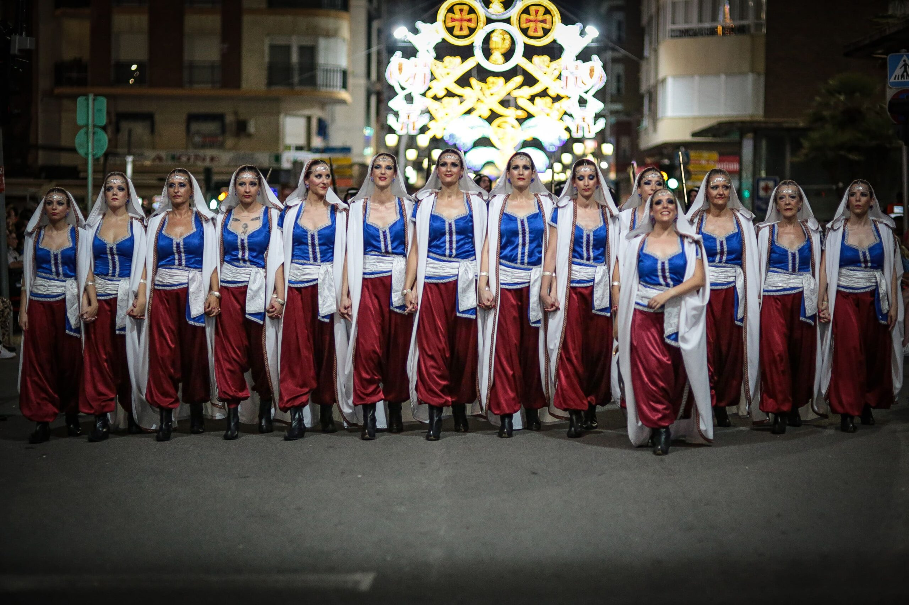
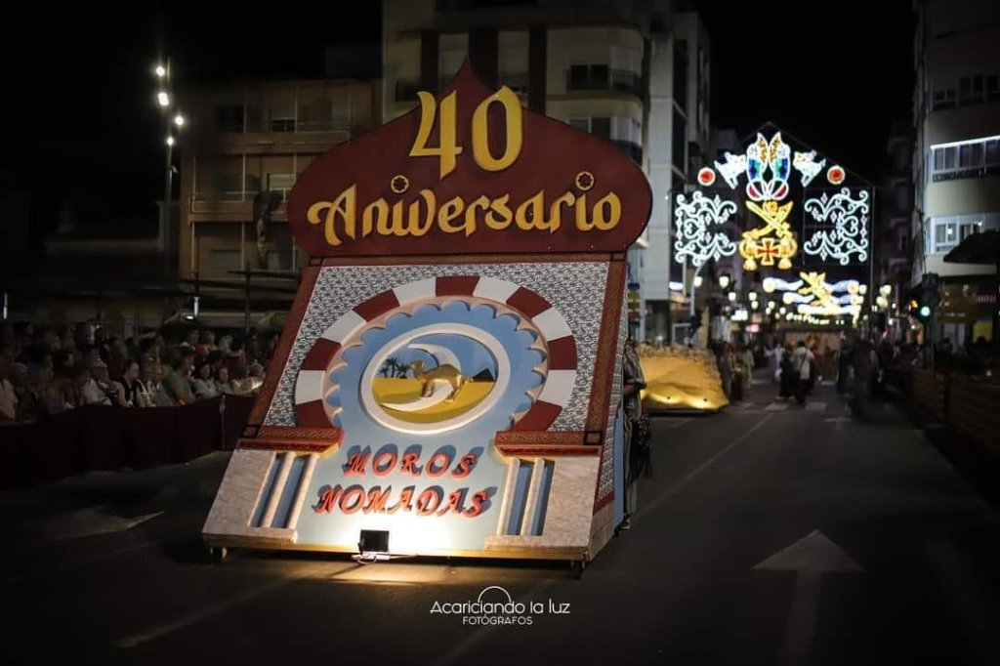
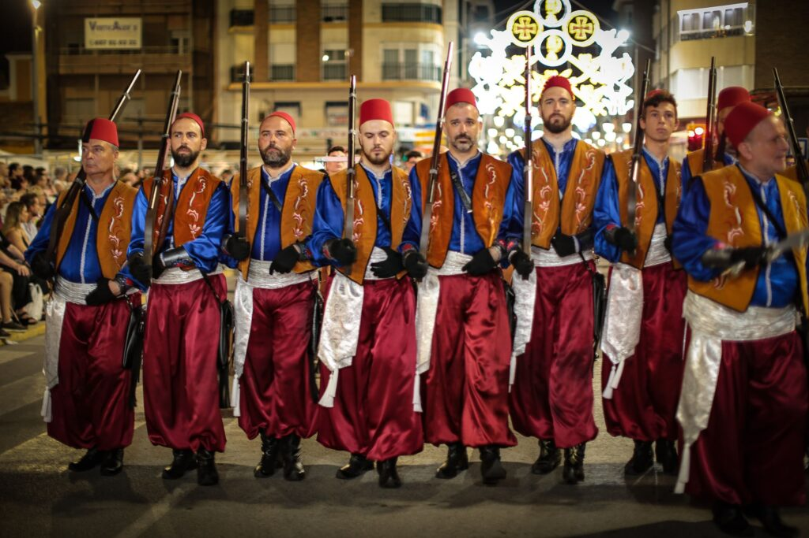
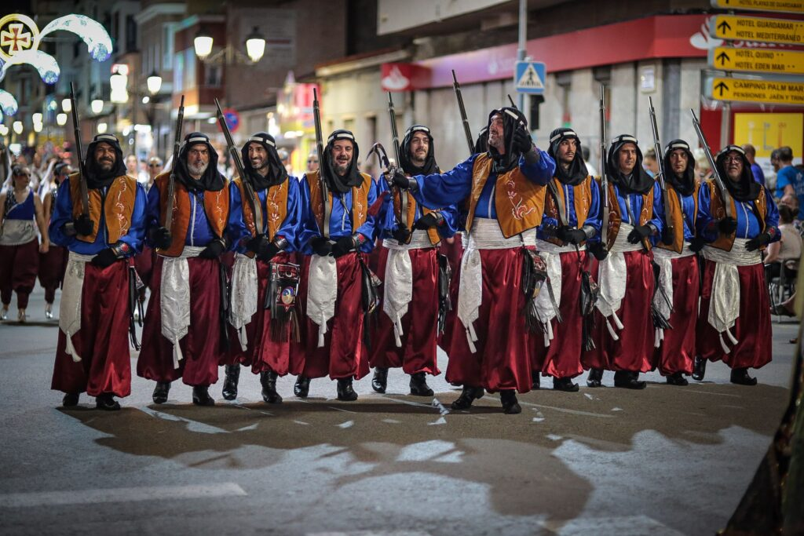
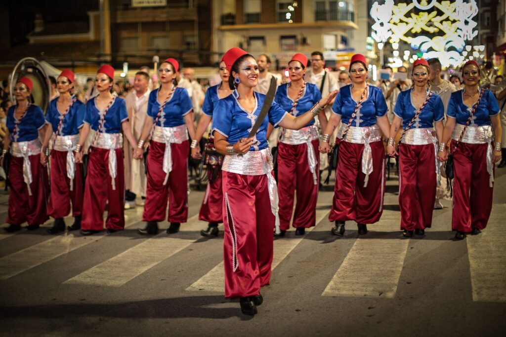

Un legado de valores y pasión desde 1979
Más de cuatro décadas y casi cuatro generaciones engrandeciendo las Fiestas de Moros y Cristianos de Guardamar del Segura con historia, hermandad y espíritu festero.
Nuestra misión
Nuestra misión es mantener viva, preservar y transmitir la tradición de las Fiestas de Moros y Cristianos de Guardamar del Segura, poniendo en valor su riqueza histórica, cultural y festiva.
Como asociación, trabajamos para fomentar la participación de nuestros socios, fortalecer los lazos de amistad y convivencia y mantener vivo el espíritu festero que nos une. Queremos que cada generación encuentre en nuestra comparsa un espacio de encuentro, compañerismo, ilusión y pertenencia.
Participamos activamente en la promoción y celebración de nuestras fiestas, contribuyendo a conservar sus tradiciones y a enriquecer el patrimonio cultural de nuestra localidad.
Creemos en la importancia de transmitir nuestra pasión por la fiesta a los más jóvenes, mantener nuestras costumbres y hacer que el legado de quienes nos precedieron siga creciendo con cada nueva generación.
Nuestra comparsa es tradición, convivencia, cultura y pasión por los Moros y Cristianos.
Raíces profundas en la fiesta
Fundada en 1979 por un grupo de amigos y compañeros de trabajo que compartían la misma pasión, la Comparsa Moros Nómadas trabajó con ahínco junto a otras nueve comparsas para fortalecer y engrandecer las fiestas patronales de Guardamar del Segura.

40 Aniversario · Guardamar del Segura
Nuestro emblema en las calles de Guardamar, símbolo de más de cuatro décadas de historia nómada.
Un grupo de amigos y compañeros de trabajo funda los Moros Nómadas, ayudando a consolidar la naciente Junta de Comparsas de Guardamar.
Tras el sorteo de 1980, los Nómadas abren el ciclo de capitanías del Bando Moro en 1981, siendo los primeros en presentar Capitanes, Abanderada y Embajador, e introduciendo la representación del moro traidor (importada con permiso de Xixona).
Una filada de los Moros Nómadas representa a Guardamar en el II Congreso Nacional de Fiestas de Moros y Cristianos celebrado en Ontinyent, además de apoyar desfiles y boatos en pueblos vecinos.
De sus filas han surgido dos presidentes de la Junta Central de Comparsas y numerosos cargos festeros, manteniendo intacto el espíritu de engrandecer las fiestas patronales.
Filadas
Azul real, bombachos carmesí, fajas plateadas y chalecos bordados que marcan el paso de la Entrada Mora por las calles de Guardamar.
- 01 FILADA SAHARINAS
- 02 FILADA INVISIBLES
- 03 FILADA SARRACENOS
- 04 FILADA DE NIÑ@S NABATE@S
- 05 FILADA BENIMERINES MUJERES
- 06 FILADA BENIMERINES HOMBRES
- 07 FILÀ AL-SAYIR
- 08 FILÀ SAHELIS
- 09 FILADA BEDUINAS
- 10 FILADA AMIRÍES
- 11 FILADA NAZARÍES
Momentos en el desfile



Junta Directiva
Juan Luis Palomar Sanz
Rubén Muñoz García
Diego José Maciá López
Jonathan Ibarra Sánchez
Vocales
- Vicente Zaragoza Ríos
- Fátima Andreu Sánchez
- Asunción Andreu Carbonell
- Eduardo Gomis Quinto
Representantes
- Fátima Andreu Sánchez
- Asunción Andreu Carbonell